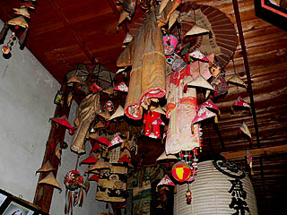
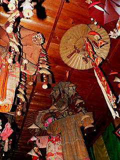
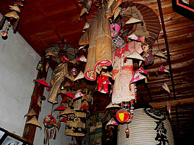
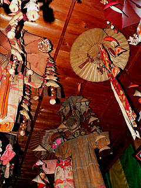

供養絵額；喜清院
遠野市青笹にある喜清院。
ここも外陣に供養絵額が幾つか並んでいる。内陣脇の部屋には遺影がずらりと並んでいる。
死者の記憶と記録がムンムンと漂う特濃空間だ。隅には漆塗りのおびんずるさまが静かに座っている。
ある意味これが遠野スタンダードなのかも、と思えてきた。
右のヒゲの立派な御仁の遺影は一際目立っていた。
没年が大正7年の絵額。年代的にこのあたりが供養絵額の製作時期の最末期になろう。
これ以降絵額はなくなり肖像画、そして写真の奉納へと変遷して行くのだ。
明治19年の絵額。柱の掛時計は他の寺の絵額にも描かれていた。同じ作者なのだろう。戒名は女性のものだけ。
上段は横長の珍しい絵額。男性が１人、女性が5人、子供が2人の大所帯である。何故か戒名は記載されておらず施主名のみ。大正6年奉納。
下段は縁側の向こうが冬景色。
・・・てな具合に絵額を見ていて、ふと、天井を見上げてみると・・・
 な、なんじゃこりゃあ〜！
一瞬、何なのかまったく判らなかった。傘の下に着物や毬、人形などがぶら下がっている。
見れば天井にびっしり下がっているではないか。これは凄い迫力だ。

お寺の大黒さんに話を伺うと、かつて小さい子供が亡くなったときに遺族（親）が供養のために奉納していたそうだ。
小さな子供が擬人化されて天井からぶらさがっているような奇妙なインパクトがある。
中にはベビー服がそのまま吊るしてるのもある。これも子供の事を思い出すよすがとして機能していたのだろうか。
呼び名は特にないという事なので勝手に傘アゲモノとでも名付けさせてもらいましょう。

奉納された年は昭和初期から40年代までだった。その後はこの習俗は絶えてしまったという事だ。
傘アゲモノや供養絵額や供養人形や遺影奉納・・・このような一般的にも学術的にも確認されない習俗が次から次へと生まれては消えて行くのだろうか。
これだけ民俗学的に注目されて、その習慣全体が根こそぎ研究対象になっているかのような土地においてさえもこれらの習俗はほとんど話題にのぼらない。
・・・という事は他の地域には人知れず消えて行く供養系奉納習俗は山程あるのだろう。
勿論、今でも続いている、また最近生まれた、さらにこれから生まれる習俗もあるはずである。
な、なんじゃこりゃあ〜！
一瞬、何なのかまったく判らなかった。傘の下に着物や毬、人形などがぶら下がっている。
見れば天井にびっしり下がっているではないか。これは凄い迫力だ。

お寺の大黒さんに話を伺うと、かつて小さい子供が亡くなったときに遺族（親）が供養のために奉納していたそうだ。
小さな子供が擬人化されて天井からぶらさがっているような奇妙なインパクトがある。
中にはベビー服がそのまま吊るしてるのもある。これも子供の事を思い出すよすがとして機能していたのだろうか。
呼び名は特にないという事なので勝手に傘アゲモノとでも名付けさせてもらいましょう。

奉納された年は昭和初期から40年代までだった。その後はこの習俗は絶えてしまったという事だ。
傘アゲモノや供養絵額や供養人形や遺影奉納・・・このような一般的にも学術的にも確認されない習俗が次から次へと生まれては消えて行くのだろうか。
これだけ民俗学的に注目されて、その習慣全体が根こそぎ研究対象になっているかのような土地においてさえもこれらの習俗はほとんど話題にのぼらない。
・・・という事は他の地域には人知れず消えて行く供養系奉納習俗は山程あるのだろう。
勿論、今でも続いている、また最近生まれた、さらにこれから生まれる習俗もあるはずである。
 そんな習俗にこれからもビッシビシ注目し続けたいと思う所存であります。
戦前の着物は陽に灼けて褪色したものや黒ずんでしまったものもある。大黒さんはもう汚れたから処分しなきゃいけないと仰っていた。
イヤイヤ。この傘アゲモノ、私のような門外漢が見ても親の重いがズッシリ伝わる感動的で貴重な奉納物です。出来る限りこのままにしておいて下さい。
そんな習俗にこれからもビッシビシ注目し続けたいと思う所存であります。
戦前の着物は陽に灼けて褪色したものや黒ずんでしまったものもある。大黒さんはもう汚れたから処分しなきゃいけないと仰っていた。
イヤイヤ。この傘アゲモノ、私のような門外漢が見ても親の重いがズッシリ伝わる感動的で貴重な奉納物です。出来る限りこのままにしておいて下さい。
長泉寺 常楽寺 西来院 喜清院⇒ 光岸寺 善明寺 瑞応院 柳玄寺
供養絵額トップページに戻る
珍寺大道場 HOME